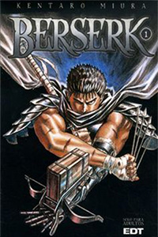
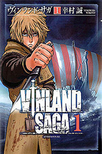
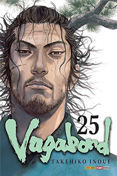

Mangás



Seinen é um termo utilizado para categorizar mangás e animes direcionados a um público masculino adulto, geralmente com idades entre 18 e 40 anos. Esse gênero se destaca por suas histórias mais complexas, temas mais maduros e desenvolvimento de personagens mais profundo em comparação com os mangás voltados para um público mais jovem, como shonen (destinados a adolescentes).